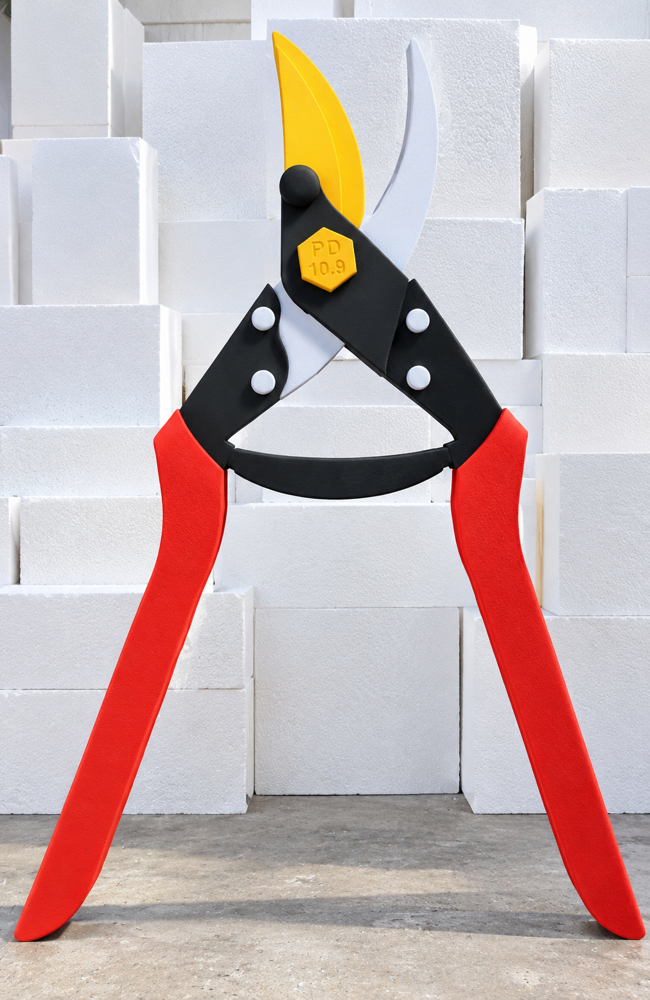
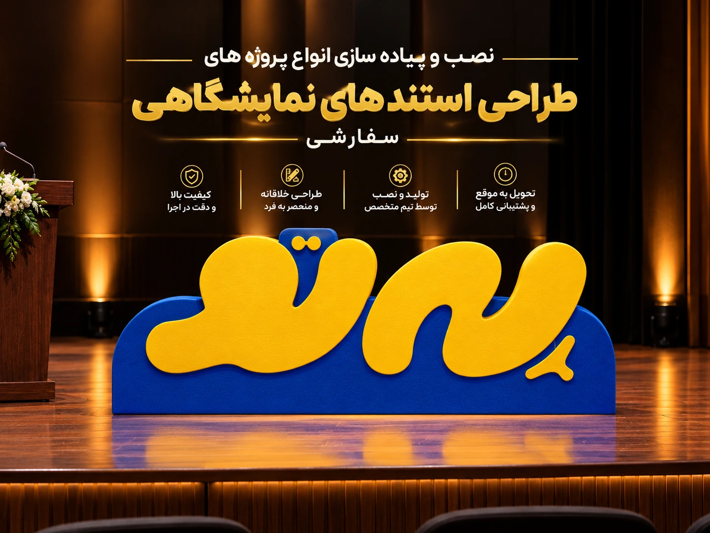
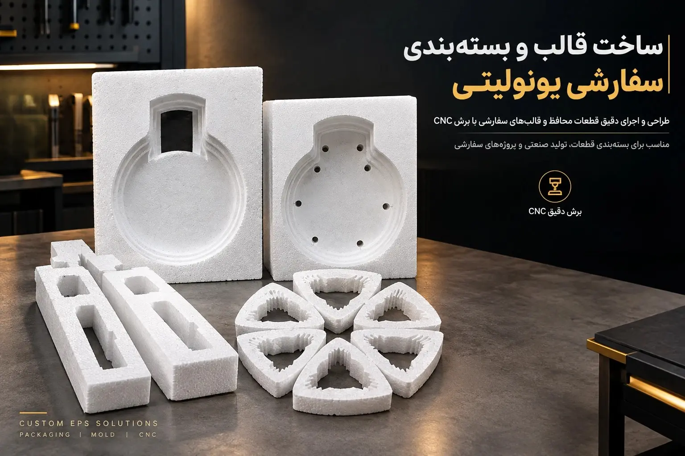
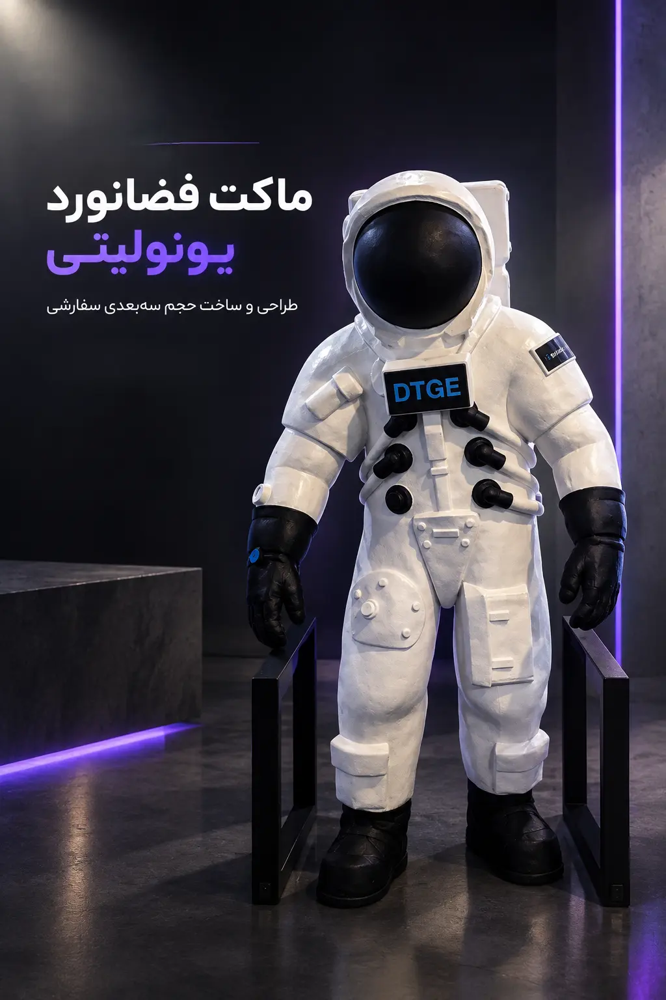
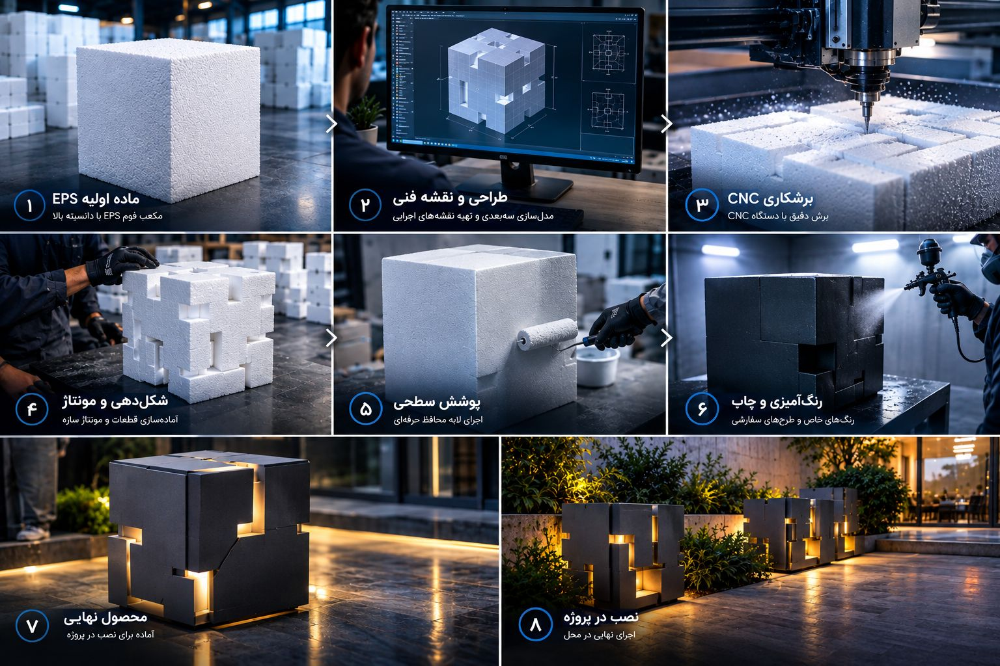
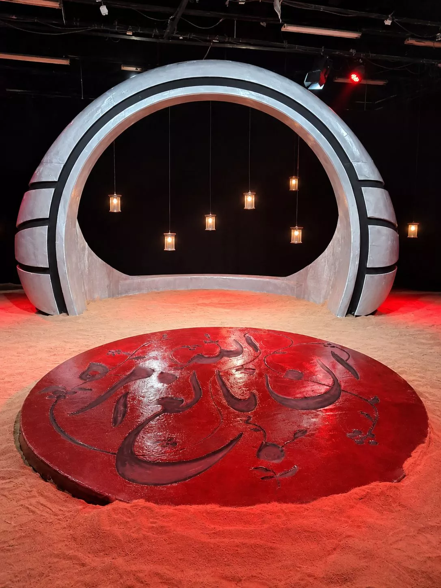

هر پروژه با پرسشهای ساده شروع میشود: چه ابعادی، چه وزنی، در چه فضایی و با چه پوششی؟ پاسخ همین چهار سؤال، مسیر ساخت را مشخص میکند — از مدلسازی سهبعدی تا برش، پوشش، رنگ و نصب.
۴گروه خدمات تخصصیدکور و استند / بستهبندی / ماکت و قالب / المان شهری
۸مرحلهی کنترلشدهی ساختاز تأمین EPS تا نصب در محل
+۳۴پروژهی مستند در آرشیوتصویر خام، در حال ساخت و نهایی
۲روش برشبرش CNC و سیم داغ برای فرمهای منحنی
چهار گروه خدمات
کاری که انجام میدهیم، به تفکیک.
هر گروه، ورودی، خروجی و بازهی اجرای خودش را دارد. پایین هر بخش، تحویلدادنیهای همان خدمت را فهرست کردهایم تا بدانید دقیقاً چه چیزی دریافت میکنید.

01 / DECOR & STAND
01
دکور، استند و المان بصری
برای فضایی که باید در سه ثانیه دیده شود: استند نمایشگاهی، بکدراپ، المان ورودی، پشتصحنهی فروشگاهی و تابلوهای حجمی. فرم بزرگ با وزن کم ساخته میشود تا نصب بدون جرثقیل سنگین انجام شود. سقف ابعاد و ضخامت مجاز در محدودیتهای برش یونولیت آمده است.
01مدلسازی سهبعدی و نقشهی اجرایی با ابعاد نهایی
02ساخت با EPS و تراش نهایی برای لبههای تمیز
03پوشش سخت ضد ضربه و رنگ صنعتی یا چاپ طرح سفارشی
04قطعهبندی برای حمل و نصب سریع در محل نمایشگاه
نمایشگاهویترین فروشگاهبکدراپ کمپینتابلو حجمی

استند نمایشگاهی برندینگ؛ سازهٔ سبک برای غرفه و رویداد، با امکان اجرای رنگ سازمانی روی سطح. نمونههای بیشتر از استندها را در آرشیو ببینید.
لوگوی سهبعدی روی دیوار؛ نشان حجمی برند برای لابی، دفتر مرکزی و ورودی شرکت. کاربرد مشابه در فهرست صنایع آمده است.
02 / PROTECTIVE PACK
02
بستهبندی محافظ صنعتی
هرجا کالا در حملونقل آسیب میبیند، جنس بستهبندی مسئله است نه خود محصول. قالب محافظ را بر اساس فرم دقیق قطعه میسازیم تا حرکت، ضربه و رطوبت کنترل شود — با سفارش تکرارپذیر برای تولید سری.
01قالبگیری بر پایهی نمونهی فیزیکی یا فایل سهبعدی قطعه
02طراحی جیبها و تکیهگاهها برای ثابتماندن قطعه
03انتخاب دانسیتهی مناسب بر اساس وزن و حساسیت کالا
04تولید سری با امکان تکرار قالب در سفارشهای بعدی
قطعات خودرولوستر و کریستاللوازم آرایشلوازم برقی

قالب و بستهبندی سفارشی؛ جیبها و تکیهگاهها بر اساس ابعاد دقیق قطعه تراش میشوند تا کالا در حملونقل بدون حرکت بماند. نمونهکارهای قالب و بستهبندی و روش محاسبهٔ هزینه را ببینید.
03 / MOCKUP & MOLD
03
ماکت، مجسمه و قالبسازی
وقتی باید فرم قبل از اجرای نهایی دیده شود: ماکت نمایشی در مقیاس، مجسمه و حجمهای روایی، و قالبهایی که بعد از تأیید به متریال اصلی منتقل میشوند. این مسیر، ریسک هزینهی ساخت نهایی را کم میکند.
01ماکت مقیاسی از فایل معماری یا محصول
02حجمپردازی و تراش دستی روی فرم برشخورده
03آمادهسازی سطح برای قالبگیری و پوشش نهایی
04امکان تکرار همان فرم برای شعب یا رویدادهای بعدی
ماکت معماریمجسمهفرم صنعتیچیدمان صحنه

مدل سهبعدی در حال بارگذاری…
3D / تعاملی
ماکت حجمی فضانورد؛
تبدیل طرح سهبعدی به ماکت فضانورد
ساخته شده از یونولیت با پوشش و رنگآمیزی صنعتی بمنظور استفاده
در فضای داخلی برای مشتری نصب و اجرا شد
04 / OUTDOOR
04
المان شهری و محوطهسازی فضای باز
المانهایی که زیر آفتاب و باران میمانند، پوشش متفاوتی میخواهند. با لایهی محافظ ضد آب و رنگ مقاوم به UV، فرم یونولیتی برای محوطه، ورودی مجموعه، نماد میدان و دکور موقت رویدادها آماده میشود.
01طراحی سازهی سبک با پایهی مهاربندیشده برای فضای باز
02پوشش ضد آب و رنگ مقاوم به آفتاب
03قطعهبندی و حمل به محل، سپس مونتاژ نهایی
04نگهداری ساده و امکان ترمیم موضعی آسیب
محوطه و ورودینماد میدانرویداد فضای بازدکور فصلی
تابلو و حروف برجستهٔ حجمی؛ برای ورودی مجموعه، رویداد فضای باز و نشانهٔ مسیر. نوع پوشش ضدآب و رنگ مقاوم به آفتاب بر اساس محل نصب انتخاب میشود؛ کاربرد شهری و محوطه را ببینید.
تحویلدادنیها
چهار چیز که تحویل میگیرید.
هر پروژه، صرفنظر از اندازه، از همین چهار گام عبور میکند. با اسکرول، پنلها جابهجا میشوند.
01 / DRAWING
نقشهی اجرایی
ابعاد نهایی، محل اتصال قطعات و ترتیب مونتاژ. قبل از برش، روی کاغذ تأیید میشود.

02 / CUT & BUILD
قطعات برشخورده
برش CNC و شکلدهی، سپس مونتاژ قطعات و کنترل ابعاد با اندازهی نقشه.
03 / COATING
پوشش و رنگ
لایهی محافظ ضد ضربه، ضد آب در صورت نیاز، و رنگآمیزی یا چاپ طرح سفارشی.
04 / INSTALL
نصب در محل
حمل، مونتاژ نهایی و تحویل در محل پروژه یا نمایشگاه، با قطعهبندی مناسب مسیر.

SCROLL →
فرآیند ساخت
هشت مرحله، از نقشه تا نصب
ترتیب مراحل ثابت است؛ فقط جزئیات آن بر اساس پروژه تغییر میکند. برای هر سفارش، نقطهی «تأیید شما» مشخص و شفاف است.
0%SCROLL
01
دریافت ایده و فایلفایل سهبعدی، اسکچ، تصویر مرجع یا توضیح متنی از پروژه.نقطهی تأیید: صورتجلسهی نیازها
02
طراحی و مدلسازی سهبعدیتبدیل ایده به مدل قابل برش، با ابعاد و محدودیتهای اجرایی.نقطهی تأیید: نقشهی اجرایی
03
انتخاب متریال و دانسیتهEPS با تراکم متناسب با وزن نهایی، بار وارده و نوع پوشش.نقطهی تأیید: تأیید نمونهی متریال
04
برش CNC / سیم داغبرش دقیق قطعات، منحنیها و حفرههای داخلی.نقطهی تأیید: کنترل ابعاد قطعات
05
مونتاژ و شکلدهیاتصال قطعات، تراش نهایی و آمادهسازی سطح برای پوشش.نقطهی تأیید: تصویر فرم مونتاژشده
06
پوشش سطحی و رنگلایهی محافظ، ضد آب یا مقاوم به UV، سپس رنگ و چاپ.نقطهی تأیید: تأیید نمونهرنگ
07
کنترل کیفیتبازبینی جزئیات، ابعاد نهایی و یکنواختی سطح.نقطهی تأیید: گزارش تصویری نهایی
08
حمل و نصبقطعهبندی، بستهبندی سفر، حمل و نصب در محل پروژه.نقطهی تأیید: تحویل در محل
برآورد هزینه
قیمت، تابع پنج متغیر است.
عدد قطعی از روی تصویر قابل تعیین نیست. برای برآورد، ابعاد یا فایل پروژه را بفرستید تا همین پنج متغیر را روی پروژهی شما محاسبه کنیم.
۱ / دانسیته و حجم
تراکم یونولیت و حجم فرم
متریال با تراکم بالاتر، مقاومت بیشتر و هزینهی بیشتری دارد. حجم کل فرم (نه فقط مساحت دیدهشدنی) مصرف EPS را تعیین میکند.
۲ / پیچیدگی برش
تعداد قطعات و پیچیدگی هندسه
منحنیهای سهبعدی، حفرههای داخلی و قطعهبندی زیاد، زمان برش و مونتاژ را بالا میبرد. فرمهای کروی و جزئیات ریز گرانترین بخش کار هستند.
۳ / پوشش
نوع لایهی محافظ و رنگ
پوشش ضد ضربه، ضد آب، مقاوم به UV و رنگآمیزی یا چاپ طرح سفارشی، هرکدام مرحلهی مستقل خودشان را دارند و روی هزینه اثر میگذارند.
۴ / حمل و نصب
فاصلهی محل پروژه
قطعهبندی برای حمل، بستهبندی سفر، وسیلهی نقلیه و نیاز به نصب در محل — مخصوصاً برای پروژههای خارج از کارگاه.
۵ / زمان
مهلت تحویل
سفارشهای فوری، ترتیب کار کارگاه را جابهجا میکنند. اگر تاریخ رویداد یا نمایشگاه نهایی است، از ابتدا اعلام کنید.
سطح قیمت در بازار ایران در گزارش برآورد پروژهای بررسی شده است؛ چون دادهی عمومی معتبری برای «قیمت هر متر مربع المان سفارشی» وجود ندارد، این سایت عدد منتشر نمیکند و به برآورد پروژهای هدایت میکند.